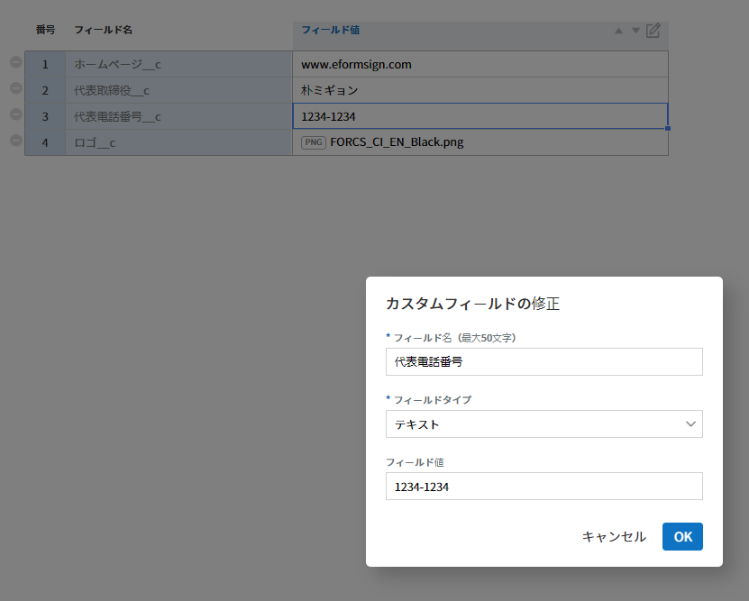
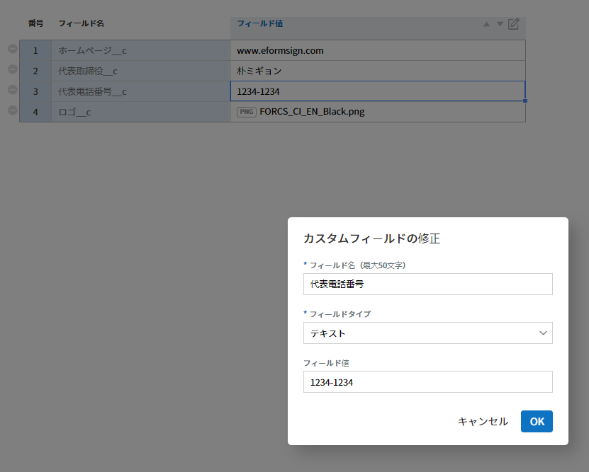

カスタマイズ¶
カスタムフィールド管理 カスタムフィールド管理¶
会社管理 > カスタムフィールド管理 では、会社、グループ、およびメンバーのフィールドを追加および編集できます。
ちなみに
文書で頻繁に使用する、会社、グループ、メンバーなどの情報（会社の代表電話番号、住所、代表者名など）をカスタムフィールドに追加した後、 テンプレートの設定 > フィールドの設定 に移動し、必要な情報が自動的に入力されるように設定できます。
{kind=link}
会社管理 > カスタムフィールド管理
- ① カスタムフィールド管理 > 会社
- 会社の代表管理者、代表管理者の電話番号、法人の印鑑など、会社に関連するフィールドを追加し、値を設定できます。
- ② カスタムフィールド管理 > グループ
- 部署名や責任者など、グループに関連するフィールドを追加し、値を設定できます。
- ③ カスタムフィールド管理 > メンバー
- 役職、メールアドレス、電話番号など、メンバーに関連するフィールドを追加し、値を設定できます。
- ④ フィールドの追加
- 新しいフィールドを追加します。フィールドの追加 ボタンをクリックすると、ポップアップウィンドウが表示され、カスタムフィールドを追加できます。フィールド名 と フィールドタイプ（テキスト/イメージ）、フィールド値 をクリックして、OK ボタンをクリックすると、フィールドがリストに追加されます。
会社管理 > カスタムフィールド管理
- ⑤ フィールドリスト
フィールドのリストにフィールド名とフィールド値を表示し、フィールド値を削除および編集できます。
フィールドを削除するには、フィールドリストの左側にあるアイコン (
 ）をクリックします。
）をクリックします。- ⑥ フィールドの編集
変更したいフィールドを選択し、修正アイコンをクリックすると、カスタムフィールドの修正ポップアップウィンドウが表示され、フィールド名、タイプ、値などを変更できます。
フィールドの順序は、順序を変更したいフィールドを選択した後、矢印 (
 ) をクリックして順序を調整できます。
) をクリックして順序を調整できます。会社管理 > カスタムフィールド管理
- ⑦ 保存
- カスタムフィールドの編集が終了すれば、 保存 ボタンをクリックして、変更内容を保存します。
{kind=link}
通知テンプレートの管理¶
通知テンプレートの管理 文書の依頼時に送信されるメールと SMS のテンプレートは、会社に合わせてカスタマイズできます。
通知テンプレートを変更するには、 会社管理 > 通知テンプレート管理 で設定するか、または テンプレート管理 > テンプレートの設定 > 通知の設定 で行えます。
{kind=link}
会社管理 > 通知テンプレート管理
会社管理 > 通知テンプレート管理 には、基本的なメールとSMS テンプレートがあり、基本的なテンプレートの内容などを変更したり、新しい通知テンプレートを追加したりできます。
基本的なテンプレートの種類（メール/SMS）
| タイプ | 状態 |
|---|---|
| 文書の処理依頼 | 決裁の依頼、文書の検討および作成の依 頼（内部/外部）、文書の返戻による修正の依頼/文 書の無効化の依頼の受信/文書の無効化の依頼の拒否 |
| 文書の処理状態 | 文書の承認/文書の削除/文書の返戻/文書の検討 および作成の完了、文書の最終完了（内部/外部）/ 文書の移管の完了/文書の修正/文書の最終完了（PDF 送信）、文書の無効化 |
| メンバーの招待 | メンバー招待/メンバー招 待の承諾/メンバー招待の拒否/メンバー会社の脱退 |
| ヘッダー/フッター |
ちなみに
デフォルトのヘッダーは eformsign のロゴです。会社管理 > 会社情報 > ブランド で会社のロゴを登録すれば、メールテンプレートに会社のロゴが適用されます。
新しい通知テンプレートを追加する方法
既存の登録済みメール/SMS テンプレートに加えて、新しい通知テンプレートを追加できます。
サイドバーのメニューで 会社管理 > 通知テンプレート管理 をクリックします。
通知テンプレートの管理 画面の右上にある 通知テンプレートの追加 ボタンをクリックします。
目的の タイプ を選択し、 状態 を選択します。（テーブルテンプレートのタイプと状態を参照）
チャンネル（メールまたはSMS）を選択し、 通知テンプレートの名前 を入力します。
ヘッター と フッター を選択します。
内容を作成します。
保存 ボタンをクリックして、テンプレートとして追加します。
{kind=link}